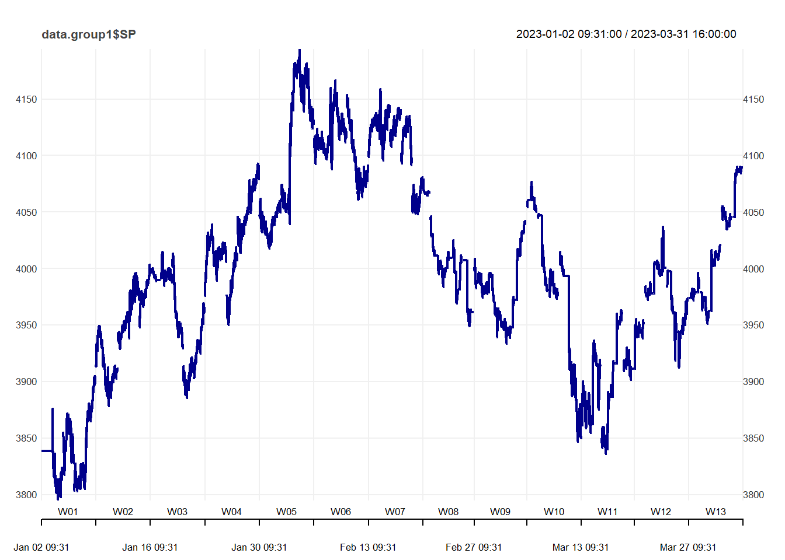
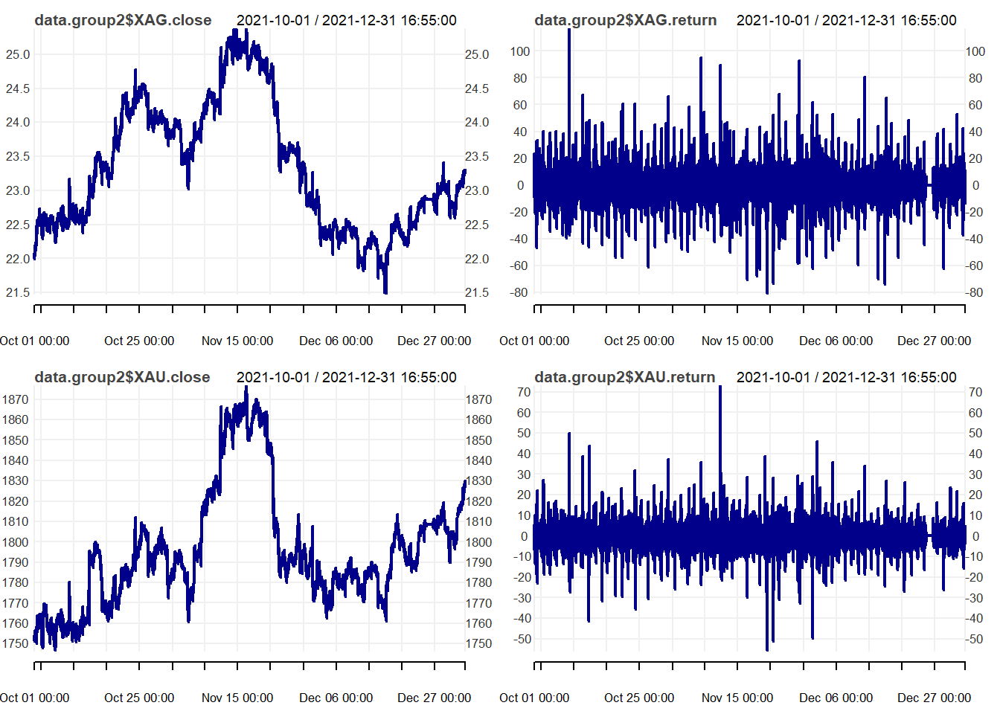
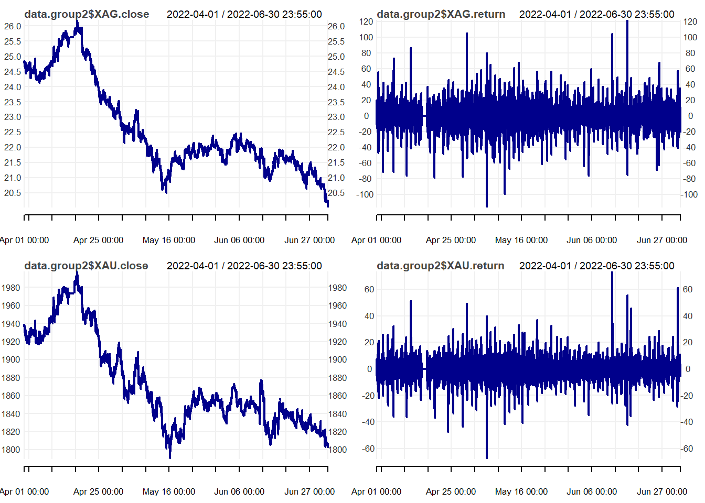
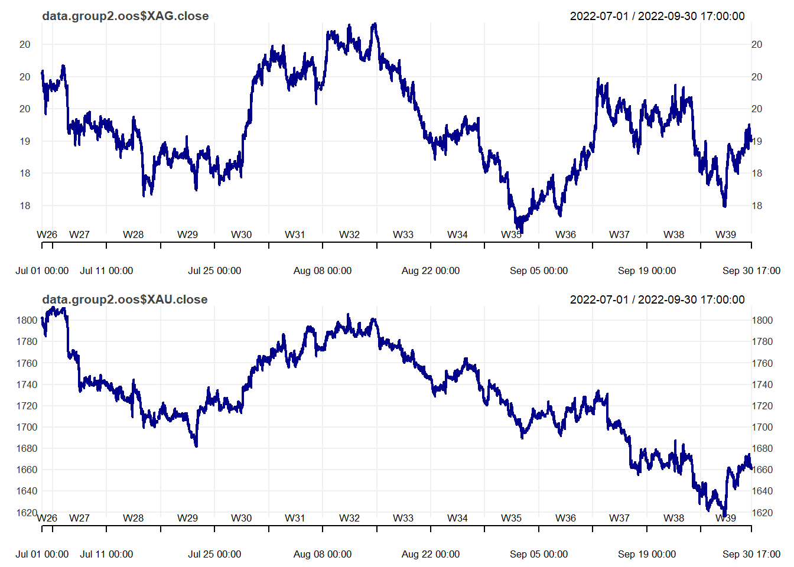
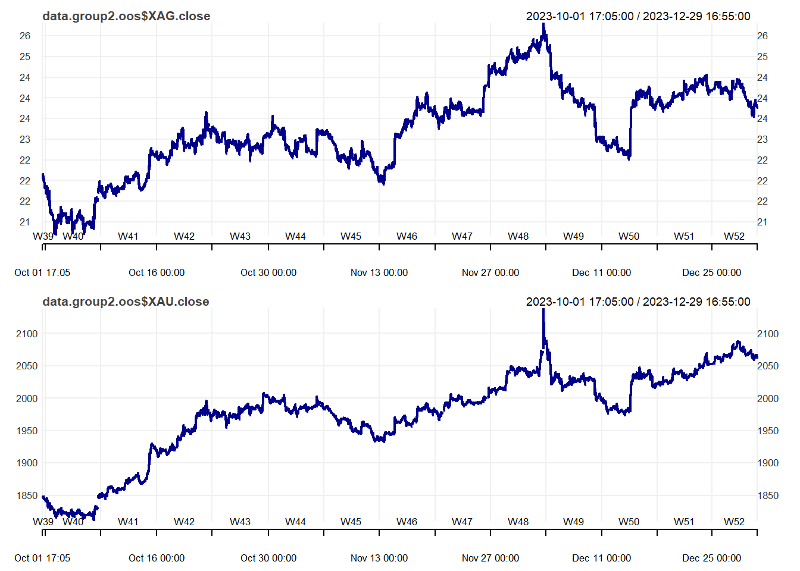

Quantitative Strategies on High Frequency Data - Project
Adam Foster, Maciej Staniszewski
2024-01-20
Approach
For the Quantitative Strategies on High Frequency Data
project, two sets of strategies were developed for two groups of
assets.
For group 1, the asset considered was the futures contract on the S&P500 index. Multiple combinations within single EMA and crossover EMA strategies were tested before arriving at the best variant based on in-sample data across all available quarters.
For group 2, futures contracts on gold and silver were considered. Multiple combinations within level-based and return-based volatility breakout pair trading strategies were tested. Similarly, the best variant was chosen based on in-sample data across all available quarters.
More details are provided in subsequent sections.
This report contains sufficient R code to effectively run all the models and analysis, ensuring full reproducibility of results.
Input
The working directory and quarters were defined. All quarterly data had to be stored in a subfolder called ‘data’ within the working directory.
Setup
Libraries, functions were loaded and system settings were set.
library(xts)
library(chron)
library(TTR)
library(tseries)
library(knitr)
library(kableExtra)
library(quantmod)
library(caTools)
library(lubridate)
library(dplyr)
library(lattice)
library(grDevices)
library(ggplot2)
library(cowplot)
options(scipen=999)
Sys.setlocale("LC_TIME", "English")## [1] "English_United States.1252"Sys.setenv(TZ = 'America/New_York')
par(oma=c(0,0,2,0)) # allocate space for plot margins
mySR <- function(x, scale) {
sqrt(scale) * mean(coredata(x), na.rm = TRUE) /
sd(coredata(x), na.rm = TRUE)
}
myCalmarRatio <- function(x, # x = series of returns
# scale parameter = Nt
scale) {
scale * mean(coredata(x), na.rm = TRUE) /
maxdrawdown(cumsum(x))$maxdrawdown
}
positionVB_new <- function(signal,
lower,
upper,
pos_flat,
strategy)
{
require(xts)
# lets check thevalue of the strategy parameter
if (! strategy %in% c("mom", "mr"))
{ print("Strategy parameter incorrect. Please use 'mom' or 'mr'!")
stop
}
# convert inputs to simpler objects
signal = coredata(signal)
lower = coredata(lower)
upper = coredata(upper)
pos_flat = coredata(pos_flat)
# lets first create a vector of 0s
position <- rep(0, length(signal))
for (i in 2:length(signal))
{
if ( pos_flat[i] == 1 ) position[i] <- 0
else
{ # check if values are nonmissing (otherwise calculations not possible)
if (!is.na(signal[i-1]) &
!is.na(upper[i-1]) &
!is.na(lower[i-1]))
{
# what if previous position was 0
if (position[i-1] == 0){
if (signal[i-1] > upper[i-1]){position[i] <- -1}
if (signal[i-1] < lower[i-1]){position[i] <- 1}
} else if (position[i-1]==-1){
# what if previous position was -1
if (signal[i-1] > lower[i-1]){position[i] <- -1}
if (signal[i-1] < lower[i-1]){position[i] <- 1}
} else if (position[i-1]==1){
# what if previous position was 1
if (signal[i-1] < upper[i-1]){position[i] <- 1}
if (signal[i-1] > upper[i-1]){position[i] <- -1}
}
} else position[i] <- position[i-1]
# if anything is missing, keep previous position
}
}
# reverse the position if we use a momentum ("mom") strategy
if(strategy == "mom") position <- (-position)
# return() function clearly indicates
# what the function should return
return(position)
}
plotHeatmap <- function(data_plot, # dataset (data.frame) with calculations
col_vlabels, # column name with the labels for a vertical axis (string)
col_hlabels, # column name with the labels for a horizontal axis (string)
col_variable, # column name with the variable to show (string)
main, # title
label_size = 6, # size of labels
save_graph = FALSE, # whether to save the graph
width = 12,
height = 8,
file_name = NULL) { # filename for saving
require(ggplot2)
require(dplyr)
data_plot$labels_ <- round(data_plot[, col_variable], 2)
data_plot[, col_hlabels] <- as.factor(data_plot[, col_hlabels])
data_plot[, col_vlabels] <- as.factor(data_plot[, col_vlabels])
p1 <- ggplot(data_plot,
aes_string(x = col_hlabels,
y = col_vlabels)) +
geom_raster(aes_string(fill = col_variable)) +
theme_bw() +
xlab(col_hlabels) +
ylab(col_vlabels) +
ggtitle(main) +
scale_fill_gradient2(low = "red",
high = "darkgreen",
mid = "white",
midpoint = 0) +
geom_label(aes_string(label = "labels_"),
size = label_size) +
theme(legend.position = "bottom",
legend.key.width = unit(2, "cm"))
if(save_graph) {
if(is.null(file_name)) stop("Please provide the file_name= argument") else
ggsave(filename = file_name,
plot = p1,
units = "in",
width = width,
height = height)
}
return(p1)
}Group 1
Group 1 data was limited to the S&P500 index. NA values were inserted in the first and last 10 minutes of the trading session to avoid trading on volatile and reactive parts of the day and to focus on intraday trading.
Exponential Moving Average (EMA) was the metric of choice in the algorithm. The time series is univariate and EMA places greater emphasis on recent prices than SMA. Both single EMA and crossover EMA were tested for entry and exit. Single EMA triggered a long position whenever price exceeded the EMA and short position otherwise; crossover EMA triggered a long position whenever fast EMA exceeded slow EMA and short position otherwise. This strategy was termed the momentum strategy being in the market. A corresponding set of results was generated for the mean reversion strategy.
In order to determine the optimal parameters for the models, multiple combinations of EMA time horizons were tested: 10-80 days for single EMA and every combination of 10-80 days constrained by fast always having to be fewer days than slow for crossover EMA.
All positions were exited in the first 25 and last 20 minutes of the trading session and in between sessions. Any remaining missing value was populated with the previous value for completeness.
Gross P&L (accounting for point values), net P&L (reflecting transaction costs) and number of trades were calculated. The data was then aggregated to daily level and the following metrics were calculated: Sharpe ratio, Calmar ratio, average number of trades, cumulative sum of gross P&L, cumulative sum of net P&L and a final test statistic.
The entire process was repeated for all in-sample quarters.
heatmap_list_single <- list()
heatmap_list_cross <- list()
heatmap_list_single_mr <- list()
heatmap_list_cross_mr <- list()
sensitivities_single <- list()
sensitivities_cross <- list()
sensitivities_single_mr <- list()
sensitivities_cross_mr <- list()
for (selected_quarter in selected_quarters) {
message(selected_quarter)
filename_ <- paste0("data/data1_", selected_quarter, ".RData")
load(filename_)
# create index of times for this quarter
data.group1 <- get(paste0("data1_", selected_quarter))
times_ <- substr(index(data.group1), 12, 19)
# Keep S&P500
data.group1 <- data.group1[, !colnames(data.group1) %in% c("NQ")]
# the following common assumptions were defined:
# 1. do not use in calculations the data from the first
# and last 10 minutes of the session (9:31--9:40 and 15:51--16:00)
# – put missing values there,
# lets put missing values for these periods
data.group1["T09:31/T09:40",] <- NA
data.group1["T15:51/T16:00",] <-NA
myTheme <- chart_theme()
myTheme$col$line.col <- "darkblue"
layout(matrix(1:1, 1, 1))
print(chart_Series(data.group1$SP, theme = myTheme))
layout(matrix(1))
# Momentum
# Single EMA
EMA_pairs = list(c(1, 10), c(1, 20), c(1, 30), c(1, 40), c(1, 50), c(1, 60), c(1, 70), c(1, 80))
data.group1a <- data.group1
for (pair in EMA_pairs) {
# lets calculate EMAfast and EMAslow for SP
data.group1a$SP_EMA <- EMA(na.locf(data.group1a$SP), pair[2])
# put missing value whenever the original price is missing
data.group1a$SP_EMA[is.na(data.group1a$SP)] <- NA
# lets calculate the position for the MOMENTUM strategy
# if price(t-1) > MA(t-1) => pos(t) = 1 [long]
# if price(t-1) <= MA(t-1) => pos(t) = -1 [short]
# this strategy is always in the market
data.group1a$positionSP.mom <- ifelse(lag.xts(data.group1a$SP) >
lag.xts(data.group1a$SP_EMA),
1, -1)
# lets apply the remaining assumptions
# - exit all positions 20 minutes before the session end, i.e. at 15:40
# - do not trade within the first 25 minutes of stocks quotations (until 9:55)
data.group1a$positionSP.mom[times(times_) <= times("09:55:00") |
times(times_) > times("15:40:00")] <- 0
# lets also fill every missing position with the previous one
data.group1a$positionSP.mom <- na.locf(data.group1a$positionSP.mom, na.rm = FALSE)
# calculating gross pnl
data.group1a$pnl_grossSP.mom <- data.group1a$positionSP.mom * diff.xts(data.group1a$SP) * 50
# number of transactions
data.group1a$ntransSP.mom <- abs(diff.xts(data.group1a$positionSP.mom))
data.group1a$ntransSP.mom[1] <- 0
# net pnl
data.group1a$pnl_netSP.mom <- data.group1a$pnl_grossSP.mom -
data.group1a$ntransSP.mom * 10 # $10 per transaction
# total for strategy
data.group1a$pnl_gross.mom <- data.group1a$pnl_grossSP.mom
data.group1a$pnl_net.mom <- data.group1a$pnl_netSP.mom
# aggregate pnls and number of transactions to daily
my.endpoints <- endpoints(data.group1a, "days")
data.group1a.daily <- period.apply(data.group1a[,c(grep("pnl", names(data.group1a)),
grep("ntrans", names(data.group1a)))],
INDEX = my.endpoints,
FUN = function(x) colSums(x, na.rm = TRUE))
# summarize the strategy for this quarter
# SR
grossSR = mySR(x = data.group1a.daily$pnl_gross.mom, scale = 252)
netSR = mySR(x = data.group1a.daily$pnl_net.mom, scale = 252)
# CR
grossCR = myCalmarRatio(x = data.group1a.daily$pnl_gross.mom, scale = 252)
netCR = myCalmarRatio(x = data.group1a.daily$pnl_net.mom, scale = 252)
# average number of transactions
av.daily.ntrades = mean(data.group1a.daily$ntransSP.mom, na.rm = TRUE)
# PnL
grossPnL = sum(data.group1a.daily$pnl_gross.mom)
netPnL = sum(data.group1a.daily$pnl_net.mom)
# stat
stat = netCR * max(0, log(abs(netPnL/1000)))
# summary of a particular strategy
summary_ <- data.frame(Close = 1,
EMA = pair[2],
period = selected_quarter, # "2016-08-16 - 2016-11",
gross.SR = grossSR,
net.SR = netSR,
gross.PnL = grossPnL,
net.PnL = netPnL,
av.daily.ntrans = av.daily.ntrades,
stringsAsFactors = FALSE)
# putting all summaries together
if(!exists("summary.pair.trading")) summary.pair.trading <- summary_ else
summary.pair.trading <- rbind(summary.pair.trading, summary_)
# deleting working files not needed any more
rm(grossSR, netSR, netCR,
grossPnL, netPnL,
av.daily.ntrades, stat,
summary_)
}
# net.SR - spread av_ratio
heatmap_sr_single <- plotHeatmap(data_plot = summary.pair.trading, # dataset (data.frame) with calculations
col_vlabels = "Close", # column name with the labels for a vertical axis (string)
col_hlabels = "EMA", # column name with the labels for a horizontal axis (string)
col_variable = "net.SR", # column name with the variable to show (string)
main = paste(selected_quarter, "Sensitivity analysis for momentum stategy based on single EMA", sep = ": "),
label_size = 3)
sensitivities_single[[selected_quarter]] <- summary.pair.trading
rm(summary.pair.trading)
heatmap_list_single[[selected_quarter]] <- heatmap_sr_single
# EMA Crossover
EMA_pairs = list(c(10, 20), c(10, 30), c(10, 40), c(10, 50), c(10, 60), c(10, 70), c(10, 80),
c(20, 30), c(20, 40), c(20, 50), c(20, 60), c(20, 70), c(20, 80),
c(30, 40), c(30, 50), c(30, 60), c(30, 70), c(30, 80),
c(40, 50), c(40, 60), c(40, 70), c(40, 80),
c(50, 60), c(50, 70), c(50, 80),
c(60, 70), c(60, 80),
c(70, 80))
data.group1b <- data.group1
# pair <- c(60, 70)
for (pair in EMA_pairs) {
# lets calculate EMAfast and EMAslow for SP
data.group1b$SP_EMAfast <- EMA(na.locf(data.group1b$SP), pair[1])
data.group1b$SP_EMAslow <- EMA(na.locf(data.group1b$SP), pair[2])
# put missing value whenever the original price is missing
data.group1b$SP_EMAfast[is.na(data.group1b$SP)] <- NA
data.group1b$SP_EMAslow[is.na(data.group1b$SP)] <- NA
# lets calculate the position for the MOMENTUM strategy
# if fast MA(t-1) > slow MA(t-1) => pos(t) = 1 [long]
# if fast MA(t-1) <= slow MA(t-1) => pos(t) = -1 [short]
# this strategy is always in the market
data.group1b$positionSP.mom <- ifelse(lag.xts(data.group1b$SP_EMAfast) >
lag.xts(data.group1b$SP_EMAslow),
1, -1)
# lets apply the remaining assumptions
# - exit all positions 20 minutes before the session end, i.e. at 15:40
# - do not trade within the first 25 minutes of stocks quotations (until 9:55)
data.group1b$positionSP.mom[times(times_) <= times("09:55:00") |
times(times_) > times("15:40:00")] <- 0
# lets also fill every missing position with the previous one
data.group1b$positionSP.mom <- na.locf(data.group1b$positionSP.mom, na.rm = FALSE)
# calculating gross pnl
data.group1b$pnl_grossSP.mom <- data.group1b$positionSP.mom * diff.xts(data.group1b$SP) * 50
# number of transactions
data.group1b$ntransSP.mom <- abs(diff.xts(data.group1b$positionSP.mom))
data.group1b$ntransSP.mom[1] <- 0
# net pnl
data.group1b$pnl_netSP.mom <- data.group1b$pnl_grossSP.mom -
data.group1b$ntransSP.mom * 10 # $10 per transaction
# total for strategy
data.group1b$pnl_gross.mom <- data.group1b$pnl_grossSP.mom
data.group1b$pnl_net.mom <- data.group1b$pnl_netSP.mom
# aggregate pnls and number of transactions to daily
my.endpoints <- endpoints(data.group1b, "days")
data.group1b.daily <- period.apply(data.group1b[,c(grep("pnl", names(data.group1b)),
grep("ntrans", names(data.group1b)))],
INDEX = my.endpoints,
FUN = function(x) colSums(x, na.rm = TRUE))
# summarize the strategy for this quarter
# SR
grossSR = mySR(x = data.group1b.daily$pnl_gross.mom, scale = 252)
netSR = mySR(x = data.group1b.daily$pnl_net.mom, scale = 252)
# CR
grossCR = myCalmarRatio(x = data.group1b.daily$pnl_gross.mom, scale = 252)
netCR = myCalmarRatio(x = data.group1b.daily$pnl_net.mom, scale = 252)
# average number of transactions
av.daily.ntrades = mean(data.group1b.daily$ntransSP.mom, na.rm = TRUE)
# PnL
grossPnL = sum(data.group1b.daily$pnl_gross.mom)
netPnL = sum(data.group1b.daily$pnl_net.mom)
# stat
stat = netCR * max(0, log(abs(netPnL/1000)))
# collecting all statistics for a particular quarter
if(pair[1] == 60 & pair[2] == 70) {
quarter_stats <- data.frame(quarter = selected_quarter,
assets.group = 1,
gross.SR = grossSR,
net.SR = netSR,
gross.CR = grossCR,
net.CR = netCR,
gross.PnL = grossPnL,
net.PnL = netPnL,
av.daily.ntrans = av.daily.ntrades,
stat,
stringsAsFactors = FALSE
)
# collect summaries for all quarters
if(!exists("quarter_stats.all.group1")) quarter_stats.all.group1 <- quarter_stats else
quarter_stats.all.group1 <- rbind(quarter_stats.all.group1, quarter_stats)
# create a plot of gros and net pnl and save it to png file
print( # when plotting in a loop you have to use print()
plot(cbind(cumsum(data.group1b.daily$pnl_gross.mom),
cumsum(data.group1b.daily$pnl_net.mom)),
multi.panel = FALSE,
main = paste0("Gross and net PnL for asset group 1 \n quarter ", selected_quarter),
col = c("#377EB8", "#E41A1C"),
major.ticks = "weeks",
grid.ticks.on = "weeks",
grid.ticks.lty = 3,
legend.loc = "topleft",
cex = 0.3)
)
# remove all unneeded objects for group 1
rm(pnl.gross.d, pnl.net.d, quarter_stats)
gc()
}
# summary of a particular strategy
summary_ <- data.frame(EMA.fast = pair[1],
EMA.slow = pair[2],
period = selected_quarter, # "2016-08-16 - 2016-11",
gross.SR = grossSR,
net.SR = netSR,
gross.PnL = grossPnL,
net.PnL = netPnL,
av.daily.ntrans = av.daily.ntrades,
stringsAsFactors = FALSE)
# putting all summaries together
if(!exists("summary.pair.trading")) summary.pair.trading <- summary_ else
summary.pair.trading <- rbind(summary.pair.trading, summary_)
# deleting working files not needed any more
rm(grossSR, netSR, netCR,
grossPnL, netPnL,
av.daily.ntrades, stat,
summary_)
}
# net.SR - spread av_ratio
heatmap_sr_cross <- plotHeatmap(data_plot = summary.pair.trading, # dataset (data.frame) with calculations
col_vlabels = "EMA.fast", # column name with the labels for a vertical axis (string)
col_hlabels = "EMA.slow", # column name with the labels for a horizontal axis (string)
col_variable = "net.SR", # column name with the variable to show (string)
main = paste(selected_quarter, "Sensitivity analysis for momentum stategy based on EMA crossover", sep = ": "),
label_size = 3)
sensitivities_cross[[selected_quarter]] <- summary.pair.trading
rm(summary.pair.trading)
heatmap_list_cross[[selected_quarter]] <- heatmap_sr_cross
# Mean reversion
# Single EMA
EMA_pairs = list(c(1, 10), c(1, 20), c(1, 30), c(1, 40), c(1, 50), c(1, 60), c(1, 70), c(1, 80))
data.group1a_mr <- data.group1
for (pair in EMA_pairs) {
# lets calculate EMAfast and EMAslow for SP
data.group1a_mr$SP_EMA <- EMA(na.locf(data.group1a_mr$SP), pair[2])
# put missing value whenever the original price is missing
data.group1a_mr$SP_EMA[is.na(data.group1a_mr$SP)] <- NA
# lets calculate the position for the MOMENTUM strategy
# if price(t-1) > MA(t-1) => pos(t) = 1 [long]
# if price(t-1) <= MA(t-1) => pos(t) = -1 [short]
# this strategy is always against the market
data.group1a_mr$positionSP.mr <- ifelse(lag.xts(data.group1a_mr$SP) >
lag.xts(data.group1a_mr$SP_EMA),
-1, 1)
# lets apply the remaining assumptions
# - exit all positions 20 minutes before the session end, i.e. at 15:40
# - do not trade within the first 25 minutes of stocks quotations (until 9:55)
data.group1a_mr$positionSP.mr[times(times_) <= times("09:55:00") |
times(times_) > times("15:40:00")] <- 0
# lets also fill every missing position with the previous one
data.group1a_mr$positionSP.mr <- na.locf(data.group1a_mr$positionSP.mr, na.rm = FALSE)
# calculating gross pnl
data.group1a_mr$pnl_grossSP.mr <- data.group1a_mr$positionSP.mr * diff.xts(data.group1a_mr$SP) * 50
# number of transactions
data.group1a_mr$ntransSP.mr <- abs(diff.xts(data.group1a_mr$positionSP.mr))
data.group1a_mr$ntransSP.mr[1] <- 0
# net pnl
data.group1a_mr$pnl_netSP.mr <- data.group1a_mr$pnl_grossSP.mr -
data.group1a_mr$ntransSP.mr * 10 # $10 per transaction
# total for strategy
data.group1a_mr$pnl_gross.mr <- data.group1a_mr$pnl_grossSP.mr
data.group1a_mr$pnl_net.mr <- data.group1a_mr$pnl_netSP.mr
# aggregate pnls and number of transactions to daily
my.endpoints <- endpoints(data.group1a_mr, "days")
data.group1a_mr.daily <- period.apply(data.group1a_mr[,c(grep("pnl", names(data.group1a_mr)),
grep("ntrans", names(data.group1a_mr)))],
INDEX = my.endpoints,
FUN = function(x) colSums(x, na.rm = TRUE))
# summarize the strategy for this quarter
# SR
grossSR = mySR(x = data.group1a_mr.daily$pnl_gross.mr, scale = 252)
netSR = mySR(x = data.group1a_mr.daily$pnl_net.mr, scale = 252)
# CR
grossCR = myCalmarRatio(x = data.group1a_mr.daily$pnl_gross.mr, scale = 252)
netCR = myCalmarRatio(x = data.group1a_mr.daily$pnl_net.mr, scale = 252)
# average number of transactions
av.daily.ntrades = mean(data.group1a_mr.daily$ntransSP.mr, na.rm = TRUE)
# PnL
grossPnL = sum(data.group1a_mr.daily$pnl_gross.mr)
netPnL = sum(data.group1a_mr.daily$pnl_net.mr)
# stat
stat = netCR * max(0, log(abs(netPnL/1000)))
# summary of a particular strategy
summary_ <- data.frame(Close = 1,
EMA = pair[2],
period = selected_quarter, # "2016-08-16 - 2016-11",
gross.SR = grossSR,
net.SR = netSR,
gross.PnL = grossPnL,
net.PnL = netPnL,
av.daily.ntrans = av.daily.ntrades,
stringsAsFactors = FALSE)
# putting all summaries together
if(!exists("summary.pair.trading")) summary.pair.trading <- summary_ else
summary.pair.trading <- rbind(summary.pair.trading, summary_)
# deleting working files not needed any more
rm(grossSR, netSR, netCR,
grossPnL, netPnL,
av.daily.ntrades, stat,
summary_)
}
# net.SR - spread av_ratio
heatmap_sr_single_mr <- plotHeatmap(data_plot = summary.pair.trading, # dataset (data.frame) with calculations
col_vlabels = "Close", # column name with the labels for a vertical axis (string)
col_hlabels = "EMA", # column name with the labels for a horizontal axis (string)
col_variable = "net.SR", # column name with the variable to show (string)
main = paste(selected_quarter, "Sensitivity analysis for mean reversion stategy based on single EMA", sep = ": "),
label_size = 3)
sensitivities_single_mr[[selected_quarter]] <- summary.pair.trading
rm(summary.pair.trading)
heatmap_list_single_mr[[selected_quarter]] <- heatmap_sr_single_mr
# EMA Crossover
EMA_pairs = list(c(10, 20), c(10, 30), c(10, 40), c(10, 50), c(10, 60), c(10, 70), c(10, 80),
c(20, 30), c(20, 40), c(20, 50), c(20, 60), c(20, 70), c(20, 80),
c(30, 40), c(30, 50), c(30, 60), c(30, 70), c(30, 80),
c(40, 50), c(40, 60), c(40, 70), c(40, 80),
c(50, 60), c(50, 70), c(50, 80),
c(60, 70), c(60, 80),
c(70, 80))
data.group1b_mr <- data.group1
for (pair in EMA_pairs) {
# lets calculate EMAfast and EMAslow for SP
data.group1b_mr$SP_EMAfast <- EMA(na.locf(data.group1b_mr$SP), pair[1])
data.group1b_mr$SP_EMAslow <- EMA(na.locf(data.group1b_mr$SP), pair[2])
# put missing value whenever the original price is missing
data.group1b_mr$SP_EMAfast[is.na(data.group1b_mr$SP)] <- NA
data.group1b_mr$SP_EMAslow[is.na(data.group1b_mr$SP)] <- NA
# lets calculate the position for the MOMENTUM strategy
# if fast MA(t-1) > slow MA(t-1) => pos(t) = 1 [long]
# if fast MA(t-1) <= slow MA(t-1) => pos(t) = -1 [short]
# this strategy is always against the market
data.group1b_mr$positionSP.mr <- ifelse(lag.xts(data.group1b_mr$SP_EMAfast) >
lag.xts(data.group1b_mr$SP_EMAslow),
-1, 1)
# lets apply the remaining assumptions
# - exit all positions 20 minutes before the session end, i.e. at 15:40
# - do not trade within the first 25 minutes of stocks quotations (until 9:55)
data.group1b_mr$positionSP.mr[times(times_) <= times("09:55:00") |
times(times_) > times("15:40:00")] <- 0
# lets also fill every missing position with the previous one
data.group1b_mr$positionSP.mr <- na.locf(data.group1b_mr$positionSP.mr, na.rm = FALSE)
# calculating gross pnl
data.group1b_mr$pnl_grossSP.mr <- data.group1b_mr$positionSP.mr * diff.xts(data.group1b_mr$SP) * 50
# number of transactions
data.group1b_mr$ntransSP.mr <- abs(diff.xts(data.group1b_mr$positionSP.mr))
data.group1b_mr$ntransSP.mr[1] <- 0
# net pnl
data.group1b_mr$pnl_netSP.mr <- data.group1b_mr$pnl_grossSP.mr -
data.group1b_mr$ntransSP.mr * 10 # $10 per transaction
# total for strategy
data.group1b_mr$pnl_gross.mr <- data.group1b_mr$pnl_grossSP.mr
data.group1b_mr$pnl_net.mr <- data.group1b_mr$pnl_netSP.mr
# aggregate pnls and number of transactions to daily
my.endpoints <- endpoints(data.group1b_mr, "days")
data.group1b_mr.daily <- period.apply(data.group1b_mr[,c(grep("pnl", names(data.group1b_mr)),
grep("ntrans", names(data.group1b_mr)))],
INDEX = my.endpoints,
FUN = function(x) colSums(x, na.rm = TRUE))
# summarize the strategy for this quarter
# SR
grossSR = mySR(x = data.group1b_mr.daily$pnl_gross.mr, scale = 252)
netSR = mySR(x = data.group1b_mr.daily$pnl_net.mr, scale = 252)
# CR
grossCR = myCalmarRatio(x = data.group1b_mr.daily$pnl_gross.mr, scale = 252)
netCR = myCalmarRatio(x = data.group1b_mr.daily$pnl_net.mr, scale = 252)
# average number of transactions
av.daily.ntrades = mean(data.group1b_mr.daily$ntransSP.mr, na.rm = TRUE)
# PnL
grossPnL = sum(data.group1b_mr.daily$pnl_gross.mr)
netPnL = sum(data.group1b_mr.daily$pnl_net.mr)
# stat
stat = netCR * max(0, log(abs(netPnL/1000)))
# summary of a particular strategy
summary_ <- data.frame(EMA.fast = pair[1],
EMA.slow = pair[2],
period = selected_quarter, # "2016-08-16 - 2016-11",
gross.SR = grossSR,
net.SR = netSR,
gross.PnL = grossPnL,
net.PnL = netPnL,
av.daily.ntrans = av.daily.ntrades,
stringsAsFactors = FALSE)
# putting all summaries together
if(!exists("summary.pair.trading")) summary.pair.trading <- summary_ else
summary.pair.trading <- rbind(summary.pair.trading, summary_)
# deleting working files not needed any more
rm(grossSR, netSR, netCR,
grossPnL, netPnL,
av.daily.ntrades, stat,
summary_)
}
# net.SR - spread av_ratio
heatmap_sr_cross_mr <- plotHeatmap(data_plot = summary.pair.trading, # dataset (data.frame) with calculations
col_vlabels = "EMA.fast", # column name with the labels for a vertical axis (string)
col_hlabels = "EMA.slow", # column name with the labels for a horizontal axis (string)
col_variable = "net.SR", # column name with the variable to show (string)
main = paste(selected_quarter, "Sensitivity analysis for mean reversion stategy based on EMA crossover", sep = ": "),
label_size = 3)
sensitivities_cross_mr[[selected_quarter]] <- summary.pair.trading
rm(summary.pair.trading)
heatmap_list_cross_mr[[selected_quarter]] <- heatmap_sr_cross_mr
}
The results were depicted using heatmaps containing Sharpe ratios, considering the return per unit of volatility. The largest value indicated which parameter combination generated the best performance on the in-sample data.
The optimal strategy was crossover EMA where fast EMA was 60 days and slow EMA was 70 days. The P&L graphs above display the performance of this particular strategy.
Heatmaps supporting the choice of strategy are shown below. Quarterly outputs, as well as the mean across quarters are shown.
Single EMA Momentum
Single EMA momentum strategies performed poorly. All combinations yielded negative Sharpe ratios, especially at fewer days.

# Mean
net_srs_single <- list()
for(i in 1:length(sensitivities_single)) {
net_srs_single[[i]] <- as.list(sensitivities_single[[i]][c("net.SR")])[[1]]
}
average_net_sr_single <- sapply(seq_along(net_srs_single[[1]]), function(i) {
mean(sapply(net_srs_single, function(x) x[[i]]))
})
average_net_sr_single <- data.frame(net.SR = average_net_sr_single)
sensitivities_average_single <- sensitivities_single[[1]][c("Close", "EMA")]
sensitivities_average_single <- cbind(sensitivities_average_single, "net.SR" = average_net_sr_single)
heatmap_sr_mean_single <- plotHeatmap(data_plot = sensitivities_average_single, # dataset (data.frame) with calculations
col_vlabels = "Close", # column name with the labels for a vertical axis (string)
col_hlabels = "EMA", # column name with the labels for a horizontal axis (string)
col_variable = "net.SR", # column name with the variable to show (string)
main = paste("Mean", "Sensitivity analysis for momentum stategy based on single EMA", sep = ": "),
label_size = 3)
heatmap_sr_mean_singleCrossover EMA Momentum
Crossover EMA momentum strategies performed well. Most combinations produced positive Sharpe ratios with a clear tendency to outperform at longer day combinations. The best strategy was 60-70 with a Sharpe ratio of 0.95 and was selected as the strategy for group 1.
# Mean
net_srs_cross <- list()
for(i in 1:length(sensitivities_cross)) {
net_srs_cross[[i]] <- as.list(sensitivities_cross[[i]][c("net.SR")])[[1]]
}
average_net_sr_cross <- sapply(seq_along(net_srs_cross[[1]]), function(i) {
mean(sapply(net_srs_cross, function(x) x[[i]]))
})
average_net_sr_cross <- data.frame(net.SR = average_net_sr_cross)
sensitivities_average_cross <- sensitivities_cross[[1]][c("EMA.fast", "EMA.slow")]
sensitivities_average_cross <- cbind(sensitivities_average_cross, "net.SR" = average_net_sr_cross)
heatmap_sr_mean_cross <- plotHeatmap(data_plot = sensitivities_average_cross, # dataset (data.frame) with calculations
col_vlabels = "EMA.fast", # column name with the labels for a vertical axis (string)
col_hlabels = "EMA.slow", # column name with the labels for a horizontal axis (string)
col_variable = "net.SR", # column name with the variable to show (string)
main = paste("Mean", "Sensitivity analysis for momentum stategy based on EMA crossover", sep = ": "),
label_size = 3)
heatmap_sr_mean_crossSingle EMA Mean Reversion
Single EMA mean reversion strategies performed even worse than their momentum equivalent.
# Mean
net_srs_single_mr <- list()
for(i in 1:length(sensitivities_single_mr)) {
net_srs_single_mr[[i]] <- as.list(sensitivities_single_mr[[i]][c("net.SR")])[[1]]
}
average_net_sr_single_mr <- sapply(seq_along(net_srs_single_mr[[1]]), function(i) {
mean(sapply(net_srs_single_mr, function(x) x[[i]]))
})
average_net_sr_single_mr <- data.frame(net.SR = average_net_sr_single_mr)
sensitivities_average_single_mr <- sensitivities_single_mr[[1]][c("Close", "EMA")]
sensitivities_average_single_mr <- cbind(sensitivities_average_single_mr, "net.SR" = average_net_sr_single_mr)
heatmap_sr_mean_single_mr <- plotHeatmap(data_plot = sensitivities_average_single_mr, # dataset (data.frame) with calculations
col_vlabels = "Close", # column name with the labels for a vertical axis (string)
col_hlabels = "EMA", # column name with the labels for a horizontal axis (string)
col_variable = "net.SR", # column name with the variable to show (string)
main = paste("Mean", "Sensitivity analysis for mean reversion stategy based on single EMA", sep = ": "),
label_size = 3)
heatmap_sr_mean_single_mrCrossover EMA Mean Reversion
Similarly, crossover EMA mean reversion strategies produced negative Sharpe ratios for all combinations.
# Mean
net_srs_cross_mr <- list()
for(i in 1:length(sensitivities_cross_mr)) {
net_srs_cross_mr[[i]] <- as.list(sensitivities_cross_mr[[i]][c("net.SR")])[[1]]
}
average_net_sr_cross_mr <- sapply(seq_along(net_srs_cross_mr[[1]]), function(i) {
mean(sapply(net_srs_cross_mr, function(x) x[[i]]))
})
average_net_sr_cross_mr <- data.frame(net.SR = average_net_sr_cross_mr)
sensitivities_average_cross_mr <- sensitivities_cross_mr[[1]][c("EMA.fast", "EMA.slow")]
sensitivities_average_cross_mr <- cbind(sensitivities_average_cross_mr, "net.SR" = average_net_sr_cross_mr)
heatmap_sr_mean_cross_mr <- plotHeatmap(data_plot = sensitivities_average_cross_mr, # dataset (data.frame) with calculations
col_vlabels = "EMA.fast", # column name with the labels for a vertical axis (string)
col_hlabels = "EMA.slow", # column name with the labels for a horizontal axis (string)
col_variable = "net.SR", # column name with the variable to show (string)
main = paste("Mean", "Sensitivity analysis for mean reversion stategy based on EMA crossover", sep = ": "),
label_size = 3)
heatmap_sr_mean_cross_mrGroup 2
Group 2 data was limited to gold and silver. NA values were inserted in the first and last 10 minutes of the trading session to avoid trading on volatile and reactive parts of the day and to focus on intraday trading.
The two assets were grouped for pair trading and volatility breakout was the approach of choice in the algorithm. Being part of the same precious metals category of commodities, it was plausible to assume some level of common price movement. A spread was calculated, which formed the basis of signals for trading (volatility bands were set around the spread). Both levels and returns were tested for the spread. A short position was initially triggered whenever the signal exceeded the upper bound and then continued whilst the signal remained above the lower bound and a long position otherwise. This strategy was always a mean reversion strategy being against the market.
In order to determine the optimal parameters for the models, multiple combinations of volatility memories and multipliers were tested: every combination of 60-180 day volatility memories and 0.5-3.5 multipliers.
All positions were exited in the first 10 and last 10 minutes of the trading session and in between sessions. Any remaining missing ratio value was populated with the previous value for completeness.
Gross P&L (accounting for point values), net P&L (reflecting transaction costs) and number of trades were calculated. The data was then aggregated to daily level and the following metrics were calculated: Sharpe ratio, Calmar ratio, average number of trades, cumulative sum of gross P&L, cumulative sum of net P&L and a final test statistic.
The entire process was repeated for all in-sample quarters.
heatmap_list <- list()
heatmap_list2 <- list()
sensitivities <- list()
sensitivities2 <- list()
for (selected_quarter in selected_quarters) {
message(selected_quarter)
filename_ <- paste0("data/data2_", selected_quarter, ".RData")
load(filename_)
data.group2 <- get(paste0("data2_", selected_quarter))
times_ <- substr(index(data.group2), 12, 19)
# Keep gold and silver
data.group2 <- data.group2[, !colnames(data.group2) %in% c("AUD","CAD")]
names(data.group2)[1:2] <- c("XAG.close","XAU.close")
data.group2.return <- 10000*diff.xts(log(data.group2))
names(data.group2.return)[1:2] <- c("XAG.return","XAU.return")
data.group2 <- merge(data.group2[, c("XAG.close", "XAU.close")],
data.group2.return[, c("XAG.return", "XAU.return")])
myTheme <- chart_theme()
myTheme$col$line.col <- "darkblue"
# the following common assumptions were defined:
# 1. do not use in calculations the data from the first and last 10 minutes of the session (18:01--18:10 and 16:51--17:00) – put missing values there,
# lets put missing values for these periods
data.group2["T18:01/T18:10",] <- NA
data.group2["T16:51/T17:00",] <- NA
layout(matrix(1:4, 2, 2))
print(chart_Series(data.group2$XAG.close, theme = myTheme))
print(chart_Series(data.group2$XAU.close, theme = myTheme))
print(chart_Series(data.group2$XAG.return, theme = myTheme))
print(chart_Series(data.group2$XAU.return, theme = myTheme))
layout(matrix(1))
###################################################################
# formulate a spread: P1 - m * P2 (P_XAU - m * P_XAG)
# where m = m1/m2 is based on average ratio between the prices
# on the PREVIOUS day
# spread is a signal to our model, which shows whether to take
# position or not (volatility bands around the spread)
# we assume the mean reverting behavior of the spread
####################################################################
# lets calculate average ratio of prices on the daily basis
index_posix <- index(data.group2)
time_component <- format(index_posix, format = "%H:%M:%S")
target_time <- "17:00:00"
indices <- which(time_component == target_time)
cmd.av.ratio <- period.apply(data.group2,
INDEX = indices,
function(x) mean(x$XAU.close/x$XAG.close,
na.rm = TRUE)
)
names(cmd.av.ratio) <- "av.ratio"
# about 64-74 XAG units per each unit of XAU (future)
# calculations based on the first day
# will be used on the second day, etc.
# move the time index to 18:00 of the next trading day (same day)
# some of the dates might be Fridays and in this case
# we would move the index to 18:00 on Sunday
# 6 = Friday
# use if_else() from dplyr instead
index(cmd.av.ratio) <-
ceiling_date(index(cmd.av.ratio), "day") -
hours(6) +
minutes(0) +
if_else(wday(index(cmd.av.ratio)) == 6,
days(2),
days(0))
###################################################################
# alternative spread based on RETURNS:
# r1 - ms * r2 (r_XAU - ms * r_XAG)
# where ms = s1/s2 is based on the ratio of standard
# deviations of returns on the PREVIOUS day
cmd.sds.ratio <- period.apply(data.group2,
INDEX = indices,
function(x) sd(x$XAU.return, na.rm = TRUE) /
sd(x$XAG.return, na.rm = TRUE)
)
names(cmd.sds.ratio) <- "sds.ratio"
# between 0.2 and 0.65 XAG units
# per each unit of XAU (future)
# move the index to 18:00 of the next trading day (same day)
index(cmd.sds.ratio) <-
ceiling_date(index(cmd.sds.ratio), "day") -
hours(6) +
minutes(0) +
if_else(wday(index(cmd.sds.ratio)) == 6,
days(2),
days(0))
# merge our basic 5 min data with daily calculations
data.group2b <- merge(data.group2,
cmd.av.ratio,
cmd.sds.ratio)
# missings in a the last 2 columns
# which should be filled with the last non-missing value
# (last multiplier is used until there is a new one)
data.group2b$av.ratio <- na.locf(data.group2b$av.ratio,
na.rm = FALSE)
data.group2b$sds.ratio <- na.locf(data.group2b$sds.ratio,
na.rm = FALSE)
# exclude weekends from data
table(wday(data.group2b))
# there are no rows with 7 (Saturday)
# calculate the spread (in 2 variants)
data.group2b$spread_avratio <-
data.group2b$XAU.close -
data.group2b$av.ratio * data.group2b$XAG.close
data.group2b$spread_sdsratio <-
data.group2b$XAU.return -
data.group2b$sds.ratio * data.group2b$XAG.return
# assume we do not trade within the first 10-mins of the day
# and exit all positions 10 minutes before the end of quotations
# create a pos_flat vector and fill it with 0s
pos_flat <- xts(rep(0, nrow(data.group2b)), index(data.group2b))
# we do not trade within the first 10 mins (18:00-18:10)
# but also before that time when session was inactive
# and last 10 mins of the session (16:51-17:00)
# but also after this time when session was inactive
pos_flat["T16:51/T18:10"] <- 1
# note this covers Fridays and Sundays as the series goes from 17:00 Friday to 17:05 Sunday
# apply volatility breakout model in a loop for spread and spread2
for(volat.sd in c(60, 90, 120, 150, 180)) { # different volatility memories
for(m_ in c(0.5, 1, 1.5, 2, 2.5, 3, 3.5)) { # different multipliers
message(paste0("volat.sd = ", volat.sd,
", m_ = ", m_))
# calculating elements of the strategy
XAU_price <- coredata(data.group2b$XAU.close)
XAG_price <- coredata(data.group2b$XAG.close)
signal <- coredata(data.group2b$spread_avratio)
signal2 <- coredata(data.group2b$spread_sdsratio)
upper <- m_ * runsd(signal, volat.sd,
endrule = "NA",
align = "right")
lower <- -m_ * runsd(signal, volat.sd,
endrule = "NA",
align = "right")
upper2 <- m_ * runsd(signal2, volat.sd,
endrule = "NA",
align = "right")
lower2 <- -m_ * runsd(signal2, volat.sd,
endrule = "NA",
align = "right")
# position for mean-reverting strategy
pos.mr <- positionVB_new(signal, lower, upper,
pos_flat = pos_flat,
strategy = "mr"
)
pos.mr2 <- positionVB_new(signal2, lower2, upper2,
pos_flat = pos_flat,
strategy = "mr"
)
# number of transactions
ntrans <- abs(diff.xts(pos.mr))
ntrans2 <- abs(diff.xts(pos.mr2))
# gross pnl
gross.pnl <- (pos.mr) *
(diff.xts(XAU_price) * 100 # point value for XAU
- coredata(data.group2b$av.ratio) * diff.xts(XAG_price) * 5000) # point value for XAG
gross.pnl2 <- (pos.mr2) *
(diff.xts(XAU_price) * 100 # point value for XAU
- coredata(data.group2b$sds.ratio) * diff.xts(XAG_price) * 5000) # point value for XAG
# pnl after costs
# costs = $7 for XAG and $12 for XAU = (12+m*7) in total
# costs are always positive
net.pnl <- gross.pnl - ntrans * (12 + coredata(data.group2b$av.ratio) * 7)
net.pnl2 <- gross.pnl2 - ntrans2 * (12 + coredata(data.group2b$sds.ratio) * 7)
# aggregate to daily
pnl.gross.d <- period.apply(gross.pnl, INDEX = indices,
FUN = function(x) sum(x, na.rm = TRUE))
pnl.gross2.d <- period.apply(gross.pnl2, INDEX = indices,
FUN = function(x) sum(x, na.rm = TRUE))
pnl.net.d <- period.apply(net.pnl, INDEX = indices,
FUN = function(x) sum(x, na.rm = TRUE))
pnl.net2.d <- period.apply(net.pnl2, INDEX = indices,
FUN = function(x) sum(x, na.rm = TRUE))
ntrans.d <- period.apply(ntrans, INDEX = indices,
FUN = function(x) sum(x, na.rm = TRUE))
ntrans2.d <- period.apply(ntrans2, INDEX = indices,
FUN = function(x) sum(x, na.rm = TRUE))
# calculate summary measures
gross.SR <- mySR(pnl.gross.d, scale = 252)
gross.SR2 <- mySR(pnl.gross2.d, scale = 252)
net.SR <- mySR(pnl.net.d, scale = 252)
net.SR2 <- mySR(pnl.net2.d, scale = 252)
gross.CR <- myCalmarRatio(pnl.gross.d, scale = 252)
gross.CR2 <- myCalmarRatio(pnl.gross2.d, scale = 252)
net.CR <- myCalmarRatio(pnl.net.d, scale = 252)
net.CR2 <- myCalmarRatio(pnl.net2.d, scale = 252)
gross.PnL <- sum(pnl.gross.d, na.rm = TRUE)
gross.PnL2 <- sum(pnl.gross2.d, na.rm = TRUE)
net.PnL <- sum(pnl.net.d, na.rm = TRUE)
net.PnL2 <- sum(pnl.net2.d, na.rm = TRUE)
av.daily.ntrans <- mean(ntrans.d, na.rm = TRUE)
av.daily.ntrans2 <- mean(ntrans2.d, na.rm = TRUE)
stat = net.CR * max(0, log(abs(net.PnL/1000)))
stat2 = net.CR2 * max(0, log(abs(net.PnL2/1000)))
# collecting all statistics for a particular quarter
if(volat.sd == 180 & m_ == 1) {
quarter_stats <- data.frame(quarter = selected_quarter,
assets.group = 2,
gross.SR,
net.SR,
gross.CR,
net.CR,
gross.PnL,
net.PnL,
av.daily.ntrans,
stat,
stringsAsFactors = FALSE
)
quarter_stats2 <- data.frame(quarter = selected_quarter,
assets.group = 2,
gross.SR2,
net.SR2,
gross.CR2,
net.CR2,
gross.PnL2,
net.PnL2,
av.daily.ntrans2,
stat2,
stringsAsFactors = FALSE
)
# collect summaries for all quarters
if(!exists("quarter_stats.all.group2")) quarter_stats.all.group2 <- quarter_stats else
quarter_stats.all.group2 <- rbind(quarter_stats.all.group2, quarter_stats)
if(!exists("quarter_stats2.all.group2")) quarter_stats2.all.group2 <- quarter_stats2 else
quarter_stats2.all.group2 <- rbind(quarter_stats2.all.group2, quarter_stats2)
# create a plot of gross and net pnl and save it to png file
y_range <- range(c(cumsum(pnl.gross.d), cumsum(pnl.net.d)))
print( # when plotting in a loop you have to use print()
plot(cumsum(pnl.gross.d),
type = "l",
main = paste0("Gross and net PnL for asset group 2 \n quarter ", selected_quarter),
col = "#377EB8",
xlab = "Time",
ylab = "Cumulative PnL",
ylim = y_range
)
)
lines(cumsum(pnl.net.d), col = "#E41A1C")
legend("topleft", legend = c("Gross PnL", "Net PnL"), col = c("#377EB8", "#E41A1C"), lty = 1, cex = 1)
}
# summary of a particular strategy
summary_ <- data.frame(spread = "av.ratio",
volat.sd = volat.sd,
m = m_,
period = selected_quarter, # "2016-08-16 - 2016-11",
gross.SR,
net.SR,
gross.PnL,
net.PnL,
av.daily.ntrans,
stringsAsFactors = FALSE)
summary2_ <- data.frame(spread = "sds.ratio",
volat.sd = volat.sd,
m = m_,
period = selected_quarter, # "2016-08-16 - 2016-11",
gross.SR = gross.SR2,
net.SR = net.SR2,
gross.PnL = gross.PnL2,
net.PnL = net.PnL2,
av.daily.ntrans = av.daily.ntrans2,
stringsAsFactors = FALSE)
# putting all summaries together
if(!exists("summary.pair.trading")) summary.pair.trading <- rbind(summary_, summary2_) else
summary.pair.trading <- rbind(summary.pair.trading, summary_, summary2_)
# deleting working files not needed any more
rm(gross.SR, gross.SR2, net.SR, net.SR2, net.CR, net.CR2,
gross.PnL, gross.PnL2, net.PnL, net.PnL2,
av.daily.ntrans, av.daily.ntrans2, stat, stat2,
pnl.gross.d, pnl.gross2.d, pnl.net.d, pnl.net2.d,
ntrans.d, ntrans2.d,
pnl.gross, pnl.gross2, pnl.net, pnl.net2,
ntrans, ntrans2,
pos.mr, pos.mr2, summary_, summary2_,
XAU_price, XAG_price,
signal, signal2, lower, lower2, upper, upper2)
} # end of loop for m_
} # end of loop for volatility
# results on the heatmap graph
# net.SR - spread av_ratio
heatmap_sr <- plotHeatmap(data_plot = summary.pair.trading[summary.pair.trading$spread == "av.ratio",], # dataset (data.frame) with calculations
col_vlabels = "volat.sd", # column name with the labels for a vertical axis (string)
col_hlabels = "m", # column name with the labels for a horizontal axis (string)
col_variable = "net.SR", # column name with the variable to show (string)
main = paste(selected_quarter, "Sensitivity analysis for pair trading - spread based on prices ratio", sep = ": "),
label_size = 3)
heatmap_sr2 <- plotHeatmap(data_plot = summary.pair.trading[summary.pair.trading$spread == "sds.ratio",], # dataset (data.frame) with calculations
col_vlabels = "volat.sd", # column name with the labels for a vertical axis (string)
col_hlabels = "m", # column name with the labels for a horizontal axis (string)
col_variable = "net.SR", # column name with the variable to show (string)
main = paste(selected_quarter, "Sensitivity analysis for pair trading - spread based on returns ratio", sep = ": "),
label_size = 3)
sensitivities[[selected_quarter]] <- summary.pair.trading[summary.pair.trading$spread == "av.ratio",]
sensitivities2[[selected_quarter]] <- summary.pair.trading[summary.pair.trading$spread == "sds.ratio",]
rm(summary.pair.trading)
heatmap_list[[selected_quarter]] <- heatmap_sr
heatmap_list2[[selected_quarter]] <- heatmap_sr2
}
## NULL## NULL
## NULL
## NULL## NULL
## NULL## NULLThe results were depicted using heatmaps containing Sharpe ratios, considering the return per unit of volatility. The largest value indicated which parameter combination generated the best performance on the in-sample data.
The optimal strategy was volatility breakout using levels where volatility memory was 180 days and the multiplier was 1. The P&L graphs above display the performance of this particular strategy.
Heatmaps supporting the choice of strategy are shown below. Quarterly outputs, as well as the mean across quarters are shown.
Volatility Breakout - Levels
Volatility breakout using price levels generated positive Sharpe ratios across all combinations. The best strategy was chosen in this approach: 180 days volatility memory and a multiplier of 1 produced a Sharpe ratio of 1.14.
# Mean
net_srs <- list()
for(i in 1:length(sensitivities)) {
net_srs[[i]] <- as.list(sensitivities[[i]][c("net.SR")])[[1]]
}
average_net_sr <- sapply(seq_along(net_srs[[1]]), function(i) {
mean(sapply(net_srs, function(x) x[[i]]))
})
average_net_sr <- data.frame(net.SR = average_net_sr)
sensitivities_average <- sensitivities[[1]][c("spread", "volat.sd", "m")]
sensitivities_average <- cbind(sensitivities_average, "net.SR" = average_net_sr)
heatmap_sr_mean <- plotHeatmap(data_plot = sensitivities_average, # dataset (data.frame) with calculations
col_vlabels = "volat.sd", # column name with the labels for a vertical axis (string)
col_hlabels = "m", # column name with the labels for a horizontal axis (string)
col_variable = "net.SR", # column name with the variable to show (string)
main = paste("Mean", "Sensitivity analysis for pair trading - spread based on prices ratio", sep = ": "),
label_size = 3)
heatmap_sr_meanVolatility Breakout - Returns
Volatility breakout using returns yielded worse Sharpe ratios, particularly at low levels of the multiplier.

# Mean
net_srs2 <- list()
for(i in 1:length(sensitivities2)) {
net_srs2[[i]] <- as.list(sensitivities2[[i]][c("net.SR")])[[1]]
}
average_net_sr2 <- sapply(seq_along(net_srs2[[1]]), function(i) {
mean(sapply(net_srs2, function(x) x[[i]]))
})
average_net_sr2 <- data.frame(net.SR = average_net_sr2)
sensitivities_average2 <- sensitivities2[[1]][c("spread", "volat.sd", "m")]
sensitivities_average2 <- cbind(sensitivities_average2, "net.SR" = average_net_sr2)
heatmap_sr_mean2 <- plotHeatmap(data_plot = sensitivities_average2, # dataset (data.frame) with calculations
col_vlabels = "volat.sd", # column name with the labels for a vertical axis (string)
col_hlabels = "m", # column name with the labels for a horizontal axis (string)
col_variable = "net.SR", # column name with the variable to show (string)
main = paste("Mean", "Sensitivity analysis for pair trading - spread based on returns ratio", sep = ": "),
label_size = 3)
heatmap_sr_mean2Conclusion
Group 1
The best strategy for group 1 was crossover EMA momentum with a fast EMA of 60 days and slow EMA of 70 days. There were quarters in which most combinations (even those containing fewer days) generated positive Sharpe ratios. This was in line with continuing bull markets throughout such periods. In general, shorter EMA periods (particularly 10 days) often yielded negative Sharpe ratios, as the market tended to revert after such short bullish signals. A longer-term view is beneficial with the S&P500, as supported by the strategy of choice: a long-term signal relative to an even longer time horizon indicated there was a sustained trading opportunity - about 0.95 Sharpe ratio on average across all quarters. The single EMA entry and exit approach performed worse, as it was falsely identifying bull/bear markets based on price changes relative to one EMA. Mean reversion also performed worse for all variants.
Cumulative net P&L amounted to $25,554 and cumulative summary statistic was 66.4 using in-sample data.
Group 2
The optimal strategy for group 2 was volatility breakout using levels with 180 days of volatility memory and a multiplier of 1. All combinations were generally profitable, indicating going against an increasing spread between gold and silver is a good strategy. There were, however, some quarters where this was not true and the divergence continued. The combination that consistently delivered the best results generated a Sharpe ratio of 1.14. It indicated it was worth taking a longer view of volatility and a lower multiplier, meaning whenever the signal moved relatively little outside the long-term bounds, a trading opportunity was worthwhile. There were also fewer trades per day (hence lower trading costs) with the selected strategy in group 2. The return-based volatility breakout entry and exit approach performed worse, as it was unable to identify genuine moves away from gold and silver’s mean to trade against, particularly at low multiplier values when the bounds were more restrictive.
Cumulative net P&L amounted to $4,705,373 and cumulative summary statistic was 165.8 using in-sample data.
The results for the best models for groups 1 and 2 can be saved as csv - the following lines need to be uncommented.
Out-of-Sample
The aforementioned optimal strategies were run on out-of-sample data.
Group 1
for (selected_quarter in OOS_quarters) {
message(selected_quarter)
filename_ <- paste0("data/data1_", selected_quarter, ".RData")
load(filename_)
# create index of times for this quarter
data.group1.oos <- get(paste0("data1_", selected_quarter))
times_ <- substr(index(data.group1.oos), 12, 19)
# Keep S&P500
data.group1.oos <- data.group1.oos[, !colnames(data.group1.oos) %in% c("NQ")]
# the following common assumptions were defined:
# 1. do not use in calculations the data from the first
# and last 10 minutes of the session (9:31--9:40 and 15:51--16:00)
# – put missing values there,
# lets put missing values for these periods
data.group1.oos["T09:31/T09:40",] <- NA
data.group1.oos["T15:51/T16:00",] <-NA
myTheme <- chart_theme()
myTheme$col$line.col <- "darkblue"
layout(matrix(1:1, 1, 1))
print(chart_Series(data.group1.oos$SP, theme = myTheme))
layout(matrix(1))
# Momentum
# EMA Crossover
EMA_pairs = list(c(60, 70))
data.group1b.oos <- data.group1.oos
# pair <- c(60, 70)
for (pair in EMA_pairs) {
# lets calculate EMAfast and EMAslow for SP
data.group1b.oos$SP_EMAfast <- EMA(na.locf(data.group1b.oos$SP), pair[1])
data.group1b.oos$SP_EMAslow <- EMA(na.locf(data.group1b.oos$SP), pair[2])
# put missing value whenever the original price is missing
data.group1b.oos$SP_EMAfast[is.na(data.group1b.oos$SP)] <- NA
data.group1b.oos$SP_EMAslow[is.na(data.group1b.oos$SP)] <- NA
# lets calculate the position for the MOMENTUM strategy
# if fast MA(t-1) > slow MA(t-1) => pos(t) = 1 [long]
# if fast MA(t-1) <= slow MA(t-1) => pos(t) = -1 [short]
# this strategy is always in the market
data.group1b.oos$positionSP.mom <- ifelse(lag.xts(data.group1b.oos$SP_EMAfast) >
lag.xts(data.group1b.oos$SP_EMAslow),
1, -1)
# lets apply the remaining assumptions
# - exit all positions 20 minutes before the session end, i.e. at 15:40
# - do not trade within the first 25 minutes of stocks quotations (until 9:55)
data.group1b.oos$positionSP.mom[times(times_) <= times("09:55:00") |
times(times_) > times("15:40:00")] <- 0
# lets also fill every missing position with the previous one
data.group1b.oos$positionSP.mom <- na.locf(data.group1b.oos$positionSP.mom, na.rm = FALSE)
# calculating gross pnl
data.group1b.oos$pnl_grossSP.mom <- data.group1b.oos$positionSP.mom * diff.xts(data.group1b.oos$SP) * 50
# number of transactions
data.group1b.oos$ntransSP.mom <- abs(diff.xts(data.group1b.oos$positionSP.mom))
data.group1b.oos$ntransSP.mom[1] <- 0
# net pnl
data.group1b.oos$pnl_netSP.mom <- data.group1b.oos$pnl_grossSP.mom -
data.group1b.oos$ntransSP.mom * 10 # $10 per transaction
# total for strategy
data.group1b.oos$pnl_gross.mom <- data.group1b.oos$pnl_grossSP.mom
data.group1b.oos$pnl_net.mom <- data.group1b.oos$pnl_netSP.mom
# aggregate pnls and number of transactions to daily
my.endpoints <- endpoints(data.group1b.oos, "days")
data.group1b.oos.daily <- period.apply(data.group1b.oos[,c(grep("pnl", names(data.group1b.oos)),
grep("ntrans", names(data.group1b.oos)))],
INDEX = my.endpoints,
FUN = function(x) colSums(x, na.rm = TRUE))
# summarize the strategy for this quarter
# SR
grossSR = mySR(x = data.group1b.oos.daily$pnl_gross.mom, scale = 252)
netSR = mySR(x = data.group1b.oos.daily$pnl_net.mom, scale = 252)
# CR
grossCR = myCalmarRatio(x = data.group1b.oos.daily$pnl_gross.mom, scale = 252)
netCR = myCalmarRatio(x = data.group1b.oos.daily$pnl_net.mom, scale = 252)
# average number of transactions
av.daily.ntrades = mean(data.group1b.oos.daily$ntransSP.mom, na.rm = TRUE)
# PnL
grossPnL = sum(data.group1b.oos.daily$pnl_gross.mom)
netPnL = sum(data.group1b.oos.daily$pnl_net.mom)
# stat
stat = netCR * max(0, log(abs(netPnL/1000)))
# collecting all statistics for a particular quarter
if(pair[1] == 60 & pair[2] == 70) {
quarter_stats <- data.frame(quarter = selected_quarter,
assets.group = 1,
gross.SR = grossSR,
net.SR = netSR,
gross.CR = grossCR,
net.CR = netCR,
gross.PnL = grossPnL,
net.PnL = netPnL,
av.daily.ntrans = av.daily.ntrades,
stat,
stringsAsFactors = FALSE
)
# collect summaries for all quarters
if(!exists("quarter_stats.all.group1.oos")) quarter_stats.all.group1.oos <- quarter_stats else
quarter_stats.all.group1.oos <- rbind(quarter_stats.all.group1.oos, quarter_stats)
# create a plot of gros and net pnl and save it to png file
print( # when plotting in a loop you have to use print()
plot(cbind(cumsum(data.group1b.oos.daily$pnl_gross.mom),
cumsum(data.group1b.oos.daily$pnl_net.mom)),
multi.panel = FALSE,
main = paste0("Gross and net PnL for asset group 1 \n quarter ", selected_quarter),
col = c("#377EB8", "#E41A1C"),
major.ticks = "weeks",
grid.ticks.on = "weeks",
grid.ticks.lty = 3,
legend.loc = "topleft",
cex = 0.3)
)
# remove all unneeded objects for group 1
rm(pnl.gross.d, pnl.net.d, quarter_stats)
gc()
}
# summary of a particular strategy
summary_ <- data.frame(EMA.fast = pair[1],
EMA.slow = pair[2],
period = selected_quarter, # "2016-08-16 - 2016-11",
gross.SR = grossSR,
net.SR = netSR,
gross.PnL = grossPnL,
net.PnL = netPnL,
av.daily.ntrans = av.daily.ntrades,
stringsAsFactors = FALSE)
# putting all summaries together
if(!exists("summary.pair.trading")) summary.pair.trading <- summary_ else
summary.pair.trading <- rbind(summary.pair.trading, summary_)
# deleting working files not needed any more
rm(grossSR, netSR, netCR,
grossPnL, netPnL,
av.daily.ntrades, stat,
summary_)
}
rm(summary.pair.trading)
}Group 2
for (selected_quarter in OOS_quarters) {
message(selected_quarter)
filename_ <- paste0("data/data2_", selected_quarter, ".RData")
load(filename_)
data.group2.oos <- get(paste0("data2_", selected_quarter))
times_ <- substr(index(data.group2.oos), 12, 19)
# Keep gold and silver
data.group2.oos <- data.group2.oos[, !colnames(data.group2.oos) %in% c("AUD","CAD")]
names(data.group2.oos)[1:2] <- c("XAG.close","XAU.close")
data.group2.oos <- data.group2.oos[, c("XAG.close", "XAU.close")]
myTheme <- chart_theme()
myTheme$col$line.col <- "darkblue"
# the following common assumptions were defined:
# 1. do not use in calculations the data from the first and last 10 minutes of the session (18:01--18:10 and 16:51--17:00) – put missing values there,
# lets put missing values for these periods
data.group2.oos["T18:01/T18:10",] <- NA
data.group2.oos["T16:51/T17:00",] <- NA
layout(matrix(1:2, 2, 1))
print(chart_Series(data.group2.oos$XAG.close, theme = myTheme))
print(chart_Series(data.group2.oos$XAU.close, theme = myTheme))
layout(matrix(1))
###################################################################
# formulate a spread: P1 - m * P2 (P_XAU - m * P_XAG)
# where m = m1/m2 is based on average ratio between the prices
# on the PREVIOUS day
# spread is a signal to our model, which shows whether to take
# position or not (volatility bands around the spread)
# we assume the mean reverting behavior of the spread
####################################################################
# lets calculate average ratio of prices on the daily basis
index_posix <- index(data.group2.oos)
time_component <- format(index_posix, format = "%H:%M:%S")
target_time <- "17:00:00"
indices <- which(time_component == target_time)
cmd.av.ratio <- period.apply(data.group2.oos,
INDEX = indices,
function(x) mean(x$XAU.close/x$XAG.close,
na.rm = TRUE)
)
names(cmd.av.ratio) <- "av.ratio"
# about 64-74 XAG units per each unit of XAU (future)
# calculations based on the first day
# will be used on the second day, etc.
# move the time index to 18:00 of the next trading day (same day)
# some of the dates might be Fridays and in this case
# we would move the index to 18:00 on Sunday
# 6 = Friday
# use if_else() from dplyr instead
index(cmd.av.ratio) <-
ceiling_date(index(cmd.av.ratio), "day") -
hours(6) +
minutes(0) +
if_else(wday(index(cmd.av.ratio)) == 6,
days(2),
days(0))
# merge our basic 5 min data with daily calculations
data.group2b.oos <- merge(data.group2.oos,
cmd.av.ratio)
# missings in a the last 2 columns
# which should be filled with the last non-missing value
# (last multiplier is used until there is a new one)
data.group2b.oos$av.ratio <- na.locf(data.group2b.oos$av.ratio,
na.rm = FALSE)
# exclude weekends from data
table(wday(data.group2b.oos))
# there are no rows with 7 (Saturday)
# calculate the spread (in 2 variants)
data.group2b.oos$spread_avratio <-
data.group2b.oos$XAU.close -
data.group2b.oos$av.ratio * data.group2b.oos$XAG.close
# assume we do not trade within the first 10-mins of the day
# and exit all positions 10 minutes before the end of quotations
# create a pos_flat vector and fill it with 0s
pos_flat <- xts(rep(0, nrow(data.group2b.oos)), index(data.group2b.oos))
# we do not trade within the first 10 mins (18:00-18:10)
# but also before that time when session was inactive
# and last 10 mins of the session (16:51-17:00)
# but also after this time when session was inactive
pos_flat["T16:51/T18:10"] <- 1
# note this covers Fridays and Sundays as the series goes from 17:00 Friday to 17:05 Sunday
# apply volatility breakout model in a loop for spread and spread2
for(volat.sd in c(180)) { # different volatility memories
for(m_ in c(1)) { # different multipliers
message(paste0("volat.sd = ", volat.sd,
", m_ = ", m_))
# calculating elements of the strategy
XAU_price <- coredata(data.group2b.oos$XAU.close)
XAG_price <- coredata(data.group2b.oos$XAG.close)
signal <- coredata(data.group2b.oos$spread_avratio)
upper <- m_ * runsd(signal, volat.sd,
endrule = "NA",
align = "right")
lower <- -m_ * runsd(signal, volat.sd,
endrule = "NA",
align = "right")
# position for mean-reverting strategy
pos.mr <- positionVB_new(signal, lower, upper,
pos_flat = pos_flat,
strategy = "mr"
)
# number of transactions
ntrans <- abs(diff.xts(pos.mr))
# gross pnl
gross.pnl <- (pos.mr) *
(diff.xts(XAU_price) * 100 # point value for XAU
- coredata(data.group2b.oos$av.ratio) * diff.xts(XAG_price) * 5000) # point value for XAG
# pnl after costs
# costs = $7 for XAG and $12 for XAU = (12+m*7) in total
# costs are always positive
net.pnl <- gross.pnl - ntrans * (12 + coredata(data.group2b.oos$av.ratio) * 7)
# aggregate to daily
pnl.gross.d <- period.apply(gross.pnl, INDEX = indices,
FUN = function(x) sum(x, na.rm = TRUE))
pnl.net.d <- period.apply(net.pnl, INDEX = indices,
FUN = function(x) sum(x, na.rm = TRUE))
ntrans.d <- period.apply(ntrans, INDEX = indices,
FUN = function(x) sum(x, na.rm = TRUE))
# calculate summary measures
gross.SR <- mySR(pnl.gross.d, scale = 252)
net.SR <- mySR(pnl.net.d, scale = 252)
gross.CR <- myCalmarRatio(pnl.gross.d, scale = 252)
net.CR <- myCalmarRatio(pnl.net.d, scale = 252)
gross.PnL <- sum(pnl.gross.d, na.rm = TRUE)
net.PnL <- sum(pnl.net.d, na.rm = TRUE)
av.daily.ntrans <- mean(ntrans.d, na.rm = TRUE)
stat = net.CR * max(0, log(abs(net.PnL/1000)))
# collecting all statistics for a particular quarter
if(volat.sd == 180 & m_ == 1) {
quarter_stats <- data.frame(quarter = selected_quarter,
assets.group = 2,
gross.SR,
net.SR,
gross.CR,
net.CR,
gross.PnL,
net.PnL,
av.daily.ntrans,
stat,
stringsAsFactors = FALSE
)
# collect summaries for all quarters
if(!exists("quarter_stats.all.group2.oos")) quarter_stats.all.group2.oos <- quarter_stats else
quarter_stats.all.group2.oos <- rbind(quarter_stats.all.group2.oos, quarter_stats)
# create a plot of gross and net pnl and save it to png file
y_range <- range(c(cumsum(pnl.gross.d), cumsum(pnl.net.d)))
print( # when plotting in a loop you have to use print()
plot(cumsum(pnl.gross.d),
type = "l",
main = paste0("Gross and net PnL for asset group 2 \n quarter ", selected_quarter),
col = "#377EB8",
xlab = "Time",
ylab = "Cumulative PnL",
ylim = y_range
)
)
lines(cumsum(pnl.net.d), col = "#E41A1C")
legend("topleft", legend = c("Gross PnL", "Net PnL"), col = c("#377EB8", "#E41A1C"), lty = 1, cex = 1)
}
# summary of a particular strategy
summary_ <- data.frame(spread = "av.ratio",
volat.sd = volat.sd,
m = m_,
period = selected_quarter, # "2016-08-16 - 2016-11",
gross.SR,
net.SR,
gross.PnL,
net.PnL,
av.daily.ntrans,
stringsAsFactors = FALSE)
# putting all summaries together
if(!exists("summary.pair.trading")) summary.pair.trading <- summary_ else
summary.pair.trading <- rbind(summary.pair.trading, summary_)
# deleting working files not needed any more
rm(gross.SR, net.SR, net.CR,
gross.PnL, net.PnL,
av.daily.ntrans, stat,
pnl.gross.d, pnl.net.d,
ntrans.d,
pnl.gross, pnl.net,
ntrans,
pos.mr, summary_,
XAU_price, XAG_price,
signal, lower, upper)
} # end of loop for m_
} # end of loop for volatility
rm(summary.pair.trading)
}
## NULL## NULL
## NULL## NULL
## NULLPerformance
Group 1 performed worse on out-of-sample data, producing an average Sharpe ratio of -0.37, cumulative net P&L of -$4,375 and cumulative summary statistic of 10.3. The result was reflective of changing market environment and therefore asset price shortly after the relatively long EMA days used in the signal, as well meaningful trading costs.
Group 2 repeated its strong performance on out-of-sample data, producing an average Sharpe ratio of 1.13, cumulative net P&L of $2,928,157 and cumulative summary statistic of 133.0. This indicated successful reversion of the gold-silver spread towards its long-term trend, even at low divergence levels. Trading frequency was also low, thus incurring relatively lower costs.
Overall, the performance of Group 2 rendered overall results satisfactory, generating a substantial P&L and good reward to risk trade-off.
The out-of-sample results for the best models for groups 1 and 2 can be saved as csv - the following lines need to be uncommented.